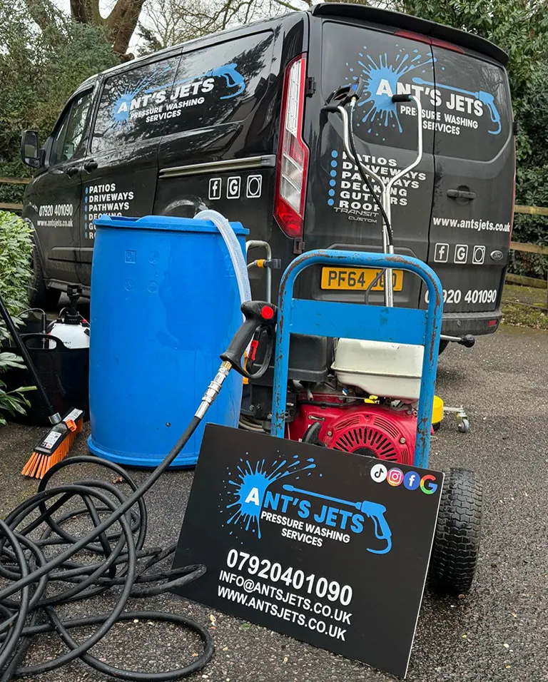

Common searches
- paving repointing Surrey
- paving repointing Surrey
- repoint patio slabs Surrey
- patio pointing Surrey
- paving joint repair Surrey
Surrey patio and paving service
For failed paving joints, patio slabs, paths and garden paving and customers searching for patio repair or paving repair in Surrey.
Surrey is the wider county target for people searching paving repointing near me, paving repair and patio repair services.
This page targets the terms people actually use: some search for repointing, while others search for patio repair, paving repair, loose slabs or broken patio joints.

Patio pointing, slab joint repair, paving repair, patio restoration, fixing loose paving slabs and replacing cracked patio joints.
Send photos of the patio, close-ups of the joints and your location in Surrey. We’ll come back with practical advice.
Driveway jet washing for block paving, concrete and outdoor hardstanding.
View service →Patio jet washing for algae, grime, black marks and slippery surfaces.
View service →Replace failed patio joints so paving looks sharper and stays more stable.
View service →Repointing for paving slabs, paths and garden hardstanding after cleaning.
View service →Help with loose slabs, failed joints, cracked mortar and tired patio areas.
View service →Exterior cleaning for local businesses, forecourts, paths and yards.
View service →Yes, Ant’s Jets is building local paving repointing and paving repair coverage for Surrey and nearby areas where jobs are commercially practical.
Yes. Customers may call it patio pointing, repointing, paving joint repair, slab joint repair or patio repair.
Where suitable, cleaning and repointing or repair can be planned together so the patio looks cleaner and more finished.
Send photos of the patio, paving joints or loose slabs and we’ll come back with a clear quote.
Request a quote